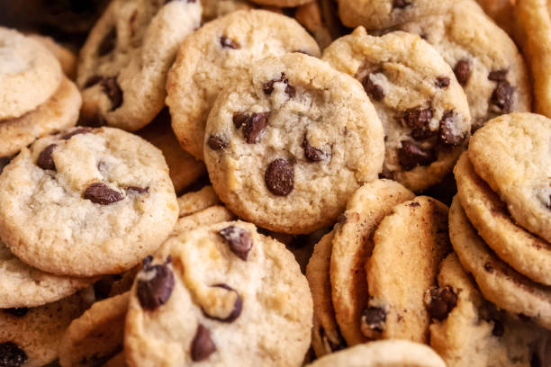

Chocolate Chip Cookie Recipe

Classic chocolate chip cookies with crisp golden edges, soft chewy centers, and rich bursts of melted chocolate in every bite.
This timeless treat balances sweetness with just the right touch of vanilla, making it perfect for everyday snacking or special occasions.
Simple ingredients, quick preparation, and guaranteed crowd-pleasing results.
Ingredients:
Cannabutter
- 1/2 cup (113 grams) unsalted butter, preferably European-style
- 1 gram high-quality cannabis flower
- 1 cup (240 ml) water
- Fine mesh strainer
- Small saucepan
Cannabis Oatmeal Cookies & Cream Cheese Frosting
- 3/4 cup (90 grams) all-purpose flour
- 1 teaspoon ground cinnamon, preferably Ceylon
- 1/2 teaspoon baking soda
- 1/4 teaspoon kosher salt, plus more to taste
- Cannabutter (above)
- 3/4 cup (149 grams) granulated sugar
- 1 1/2 teaspoon (11 grams) molasses
- 1 large egg
- 1 1/2 teaspoon vanilla extract, divided
- 1 2/3 cup (150 grams) quick-cooking oats
- 1 tablespoon maple syrup
- 4 ounce (113 grams) cream cheese, at room temperature
- 1 1/2 teaspoon freshly squeezed lemon juice
- 3/4 cup (170 grams) cup heavy cream
Instructions:
For the Cannabutter:
- Decarboxylate the cannabis: Preheat your oven to 240°F (115°C). Break up the cannabis into small pieces and spread it evenly on a baking sheet. Bake for 30-40 minutes, stirring every 10 minutes, until the cannabis is lightly browned and fragrant.
- Infuse the butter: In a small saucepan, combine the decarboxylated cannabis, butter, and water. Simmer on low heat for 2-3 hours, stirring occasionally. Do not let it boil.
- Strain the mixture: After simmering, strain the butter through a fine mesh strainer into a container, discarding the solid plant material. Allow the cannabutter to cool and solidify.
For the Cookies:
- Preheat your oven to 350°F (175°C). Line two baking sheets with parchment paper or silicone baking mats.
- In a medium bowl, whisk together the flour, cinnamon, baking soda, and salt. Set aside.
- In a large bowl, melt the cannabutter. Stir in the granulated sugar and molasses until well combined. Let cool slightly.
- Add the egg and 1 teaspoon of vanilla extract to the butter mixture and whisk until smooth.
- Gradually add the dry ingredients to the wet ingredients, mixing until just combined. Stir in the oats and maple syrup.
- Drop rounded tablespoons of dough onto the prepared baking sheets, spacing them about 2 inches apart.
- Bake for 10-12 minutes, or until the edges are golden brown but the centers are still soft. Allow cookies to cool on the baking sheets for 5 minutes before transferring to a wire rack to cool completely.
For the Frosting:
- In a medium bowl, beat the cream cheese with an electric mixer until smooth and creamy. Add the lemon juice and remaining 1/2 teaspoon of vanilla extract, and mix until combined.
- In a separate bowl, whip the heavy cream until stiff peaks form. Gently fold the whipped cream into the cream cheese mixture until fully incorporated.
- Once the cookies are completely cool, spread or pipe the frosting onto each cookie. Optionally, garnish with crushed cookies or a sprinkle of cinnamon.
- Serve immediately or refrigerate until ready to serve. Enjoy your delicious cannabis-infused chocolate chip cookies!